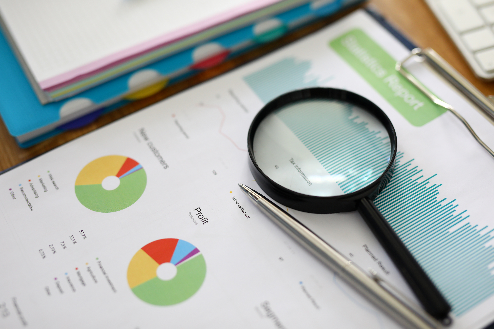
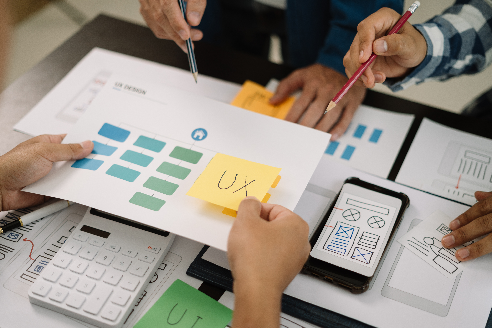

Analyse & Definitie
Kick-off met Zuiderbad, sitebezoeken en onderzoek naar bestaande kaarten om noden en frustraties bloot te leggen. We bepaalden de functionele scope en doelen.
Een interactieve kaart die bezoekers van Hofstade helpt het domein op een intuïtieve en speelse manier te ontdekken.
Voor Zuiderbad te Hofstade ontwierp ik een interactieve kaart. De samenwerking met Zuiderbad begon als schoolopdracht, maar toen het traject afgelopen was, waren ze zo enthousiast over het resultaat dat we het project verder mochten uitwerken voor écht gebruik.
Bezoekers van Hofstade vonden het moeilijk om het domein te verkennen. Er was geen duidelijke kaart die horeca, activiteiten en routes overzichtelijk toonde. De bestaande informatie was verspreid en niet mobielvriendelijk, waardoor gebruikers vaak verdwaalden of moeite hadden om snel iets terug te vinden.
We ontwikkelden een interactieve kaart die het volledige domein visueel en intuïtief weergeeft. Dankzij een routeplanner, filters en pop-ups kunnen bezoekers eenvoudig navigeren en direct de info vinden die ze zoeken. Het design is afgestemd op de Zuiderbad-branding, met op maat gemaakte iconen en illustraties. De kaart werkt bovendien responsief, zodat zowel gezinnen als sporters en bedrijven ze makkelijk kunnen gebruiken, op desktop en mobiel.
Focus op UX/UI: interface in Figma, consistente visuele stijl, en een toegankelijk componentensysteem. In front-end werkte ik o.a. aan pop-ups, detailpagina’s, filters en UI-aanpassingen zodat het ontwerp 1-op-1 werd vertaald naar productie.


Kick-off met Zuiderbad, sitebezoeken en onderzoek naar bestaande kaarten om noden en frustraties bloot te leggen. We bepaalden de functionele scope en doelen.

Wireframes, informatiearchitectuur en gebruikersflows in Figma. Via testmomenten en iteratie optimaliseerden we navigatie en gebruiksgemak.

De Zuiderbad-branding vertaald naar een frisse en toegankelijke stijl met iconen, kleuren en typografie die de sfeer van het domein weerspiegelen.

De kaart gebouwd in Leaflet.js met filters, pop-ups en routeplanner. Responsive en performant ontwikkeld voor mobiel en desktop.